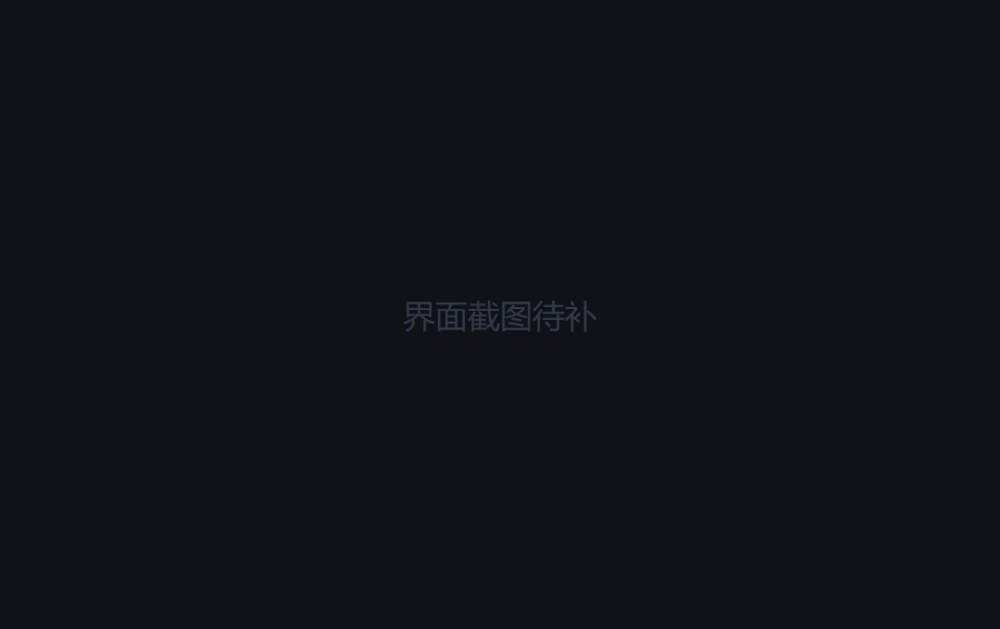
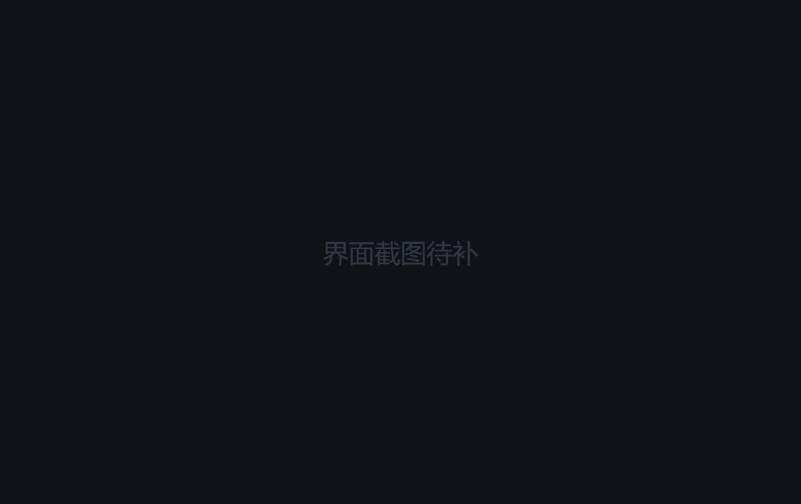
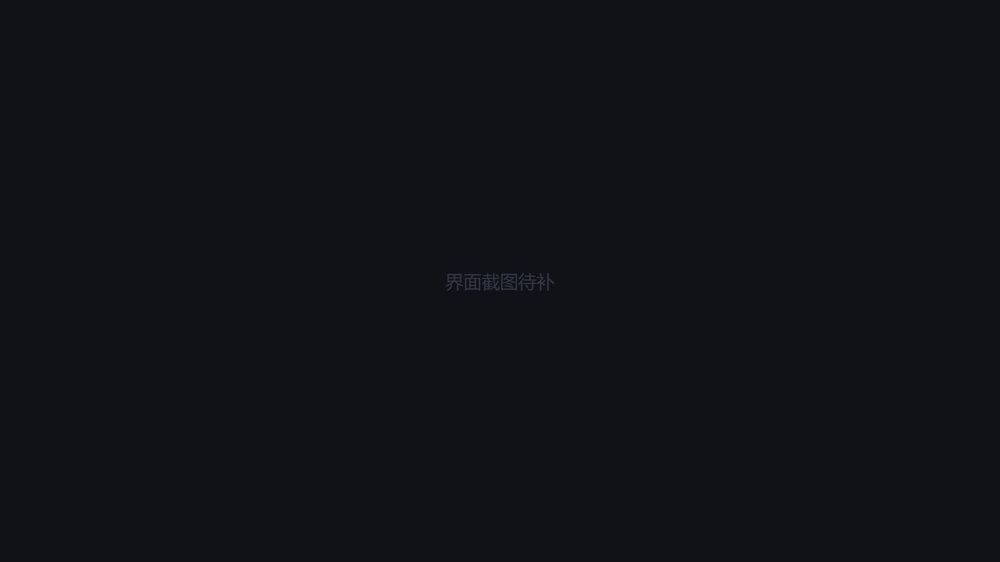

mpv 硬解
画面交给 mpv，硬件解码、低占用，老机器也能稳稳看高清。
Windows · 单文件 · 免安装
mpv 硬件解码、原生弹幕侧栏、沉浸式浮层控件。
没有网页壳，没有广告，双击就能看。

待机、边看边刷弹幕、全屏沉浸——关掉侧栏也不会丢掉任何功能。


该有的都有，不该有的都没有。
画面交给 mpv，硬件解码、低占用，老机器也能稳稳看高清。
TARS 协议直连弹幕服务器，不加载网页，断线自动重连。
控件收在画面底部浮层里，鼠标静止两秒自动淡出，不挡画面。
一键切换外壳配色，画面区始终为黑，设置自动记住。
连接中断按 2/4/8/16/30 秒退避重试，不用手动重新连接。
一个 exe 内置播放内核，双击即用，不用装 Python 或 mpv。
播放器内按 F1 随时查看。
运行要求：
不需要。exe 里已经内置了 mpv 播放内核，下载后双击即可运行。
PyInstaller 打包的单文件程序没有代码签名，被启发式引擎误报很常见。源码完全公开，可以自行审阅或按 README 从源码构建；加入信任区后即可正常使用。
清晰度分为原画、高清、超清；线路可选自动、腾讯、阿里、华为、网宿。切换后会自动用新参数重新取流。
目前只提供 Windows 打包。核心逻辑是 Python，理论上可以在其它平台从源码运行，但尚未做适配与测试。